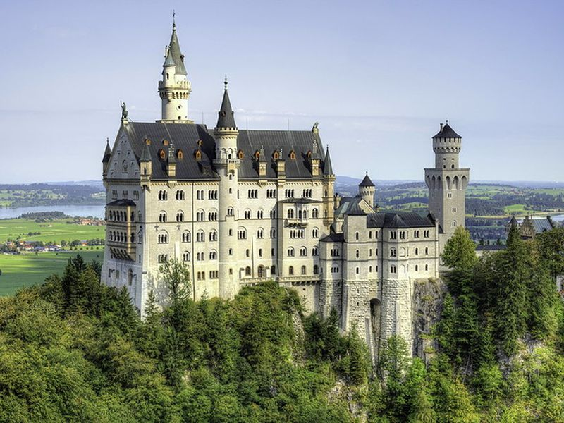
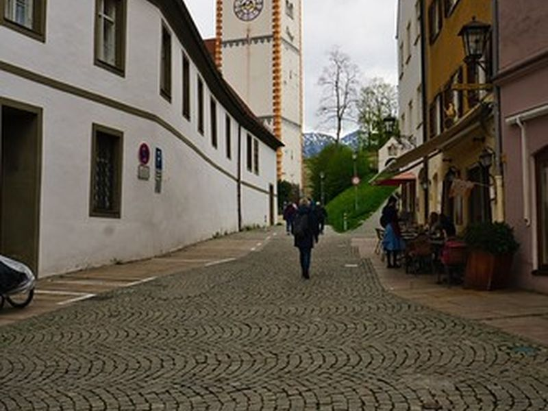
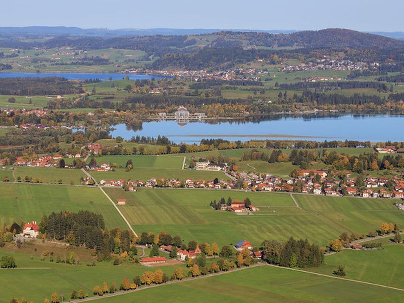
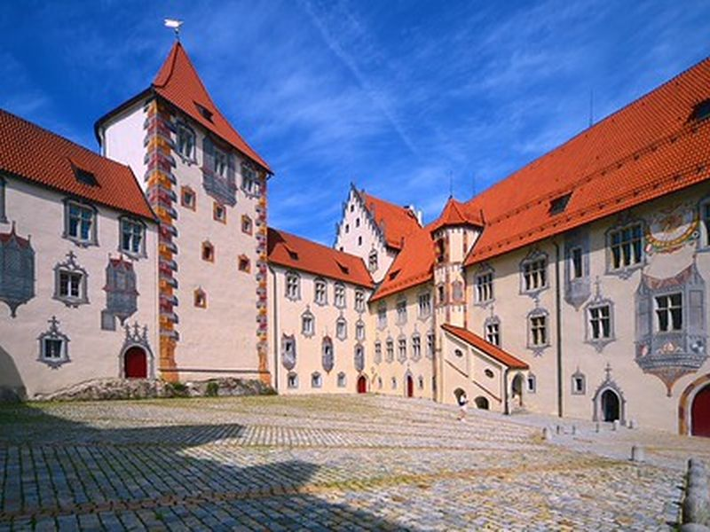
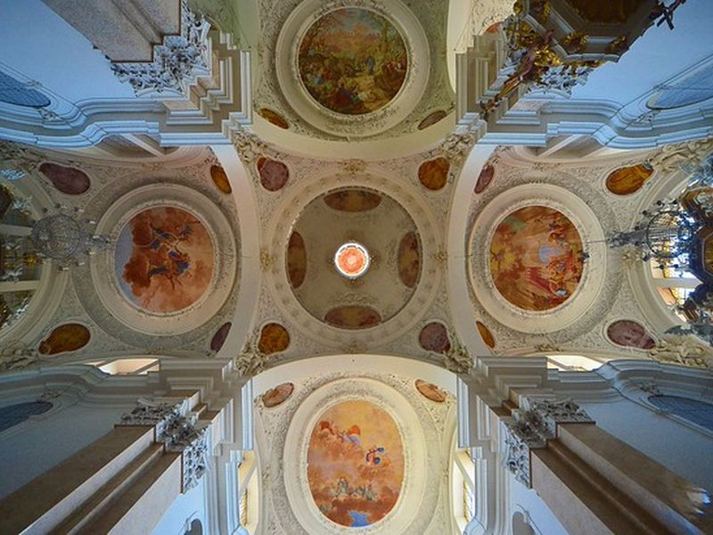

Explore Füssen
A Brief History
Füssen stands at the southern end of the Romantic Road near the Austrian border and the Lech River. It served as a residence of the Prince-Bishops of Augsburg and houses a baroque abbey and castle. Nearby Neuschwanstein and Hohenschwangau castles were built for Ludwig II of Bavaria in the 19th century. Timber trade and violin making supported the local economy before tourism grew around the alpine lakes and pass roads.
Attractions Map
Top Sights & Activities

Hohenschwangau Castle
Hohenschwangau Castle is a neo-Gothic palace painted yellow, built on the site of a medieval fortress where King Ludwig II spent much of his youth. Restored rooms show 19th-century royal life, and windows look toward the Alpsee and the distant towers of Neuschwanstein on the opposite hill.

Füssen Old Town
Füssen's old town sits at the foot of the Alps along the Lech river, with narrow streets, painted facades, and small squares. Shops and cafés occupy historic buildings near St. Mang's Abbey. The setting at the end of the Road makes it a common base for visiting the royal castles nearby.

Neuschwanstein Castle
Neuschwanstein Castle was commissioned by Ludwig II and completed after his death in 1886. The Romanesque Revival design draws on Wagnerian themes and medieval motifs. Perched on a rocky outcrop above the Pöllat gorge, it draws large numbers of visitors and can only be seen inside on guided tours.

Lechfall & Alpsee
The Lechfall is a stepped waterfall where the Lech river leaves the Alpine foothills near Füssen. A short path and bridge provide close views of the cascades. Nearby Lake Alpsee, below Hohenschwangau and Neuschwanstein, offers a flat walking trail with views of both castles across the water.

Hohes Schloss
The Hohes Schloss, or High Castle, was the summer residence of the prince-bishops of Augsburg from the 14th century. Its courtyard features illusionistic sgraffito paintings that appear three-dimensional. The building now houses art collections and overlooks the rooftops of the old town.

St. Mang's Abbey
St. Mang's Abbey was founded as a Benedictine monastery and later rebuilt in Baroque style. The church interior contains stucco work and frescoes from the 18th century. The attached Museum of Füssen documents the town's history as a center of lute and violin making from the 16th century onward.